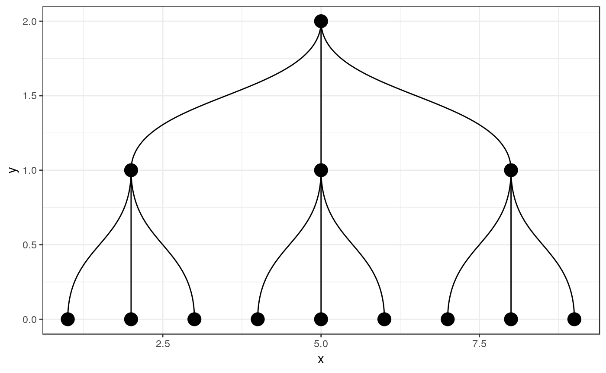
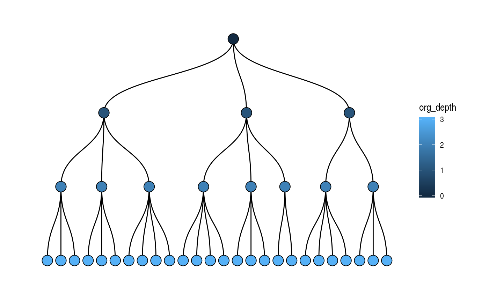
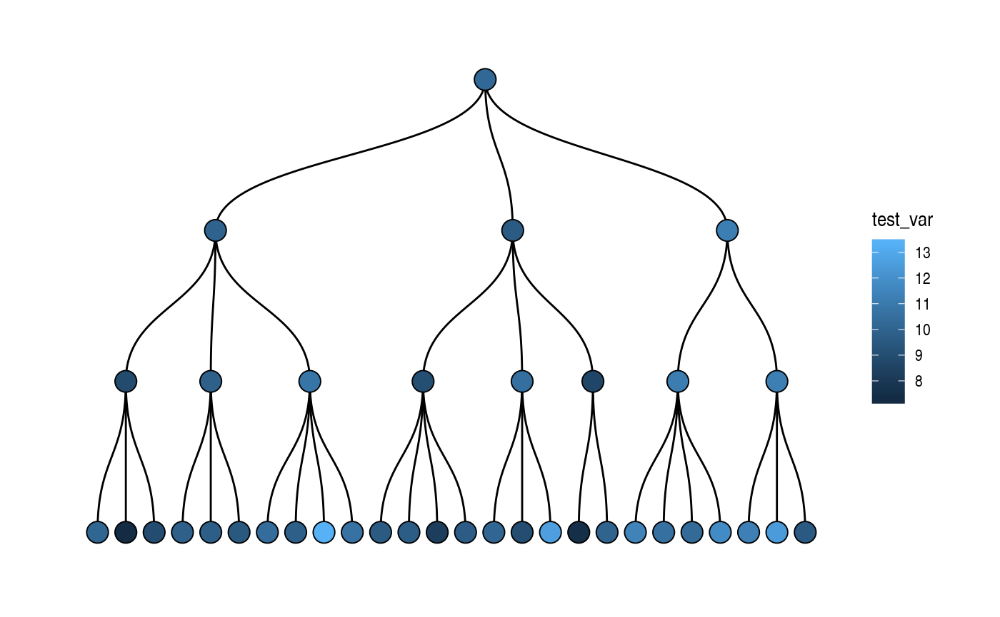

The goal of orgsurveyr is to facilitate the use of Thomas Lin Pedersen’s excellent tidygraph and ggraph packages with organisational information used by many Human Resources departments, in particular employee surveys.
Installation
You can install orgsurveyr from github with:
# install.packages("devtools")
devtools::install_github("ukgovdatascience/orgsurveyr", build_vignettes = TRUE)Example - ggraph/tidygraph
An organisation is a very basic type of network known as a tree. The tidygraph package lets us simulate and represent a tree structure as follows:
tg <- tidygraph::create_tree(13,3)
tg
#> # A tbl_graph: 13 nodes and 12 edges
#> #
#> # A rooted tree
#> #
#> # Node Data: 13 x 0 (active)
#> #
#> # Edge Data: 12 x 2
#> from to
#> <int> <int>
#> 1 1 2
#> 2 1 3
#> 3 1 4
#> # ... with 9 more rowsThe ggraph package can be used to plot networks with the familiar ggplot2 syntax. Below the simulated organisation is plotted as a dendrogram:
ggraph(tg, 'dendrogram') + geom_edge_diagonal() +
geom_node_point(size=5) + theme_bw()
Example - orgsurveyr
The orgsurveyr package provides detailed vignettes, convenience functions and example data to help HR analysts make use of the ggraph and tidygraph packages in the analysis of organisation data.
A realistic organisation can be simulated and plotted:
set.seed(1236)
tg2 <- create_realistic_org(4,3, prob=0.3)
plot_org(tg2)
Individual level data also be simulated first by simulating the number of individuals in unit:
tg3 <- simulate_unit_size(tg2)
tg3
#> # A tbl_graph: 38 nodes and 37 edges
#> #
#> # A rooted tree
#> #
#> # Node Data: 38 x 4 (active)
#> unit_id org_depth is_leaf unit_size
#> <chr> <int> <lgl> <dbl>
#> 1 1 0 FALSE 3
#> 2 3 1 FALSE 2
#> 3 4 1 FALSE 3
#> 4 5 1 FALSE 3
#> 5 10 2 FALSE 3
#> 6 11 2 FALSE 2
#> # ... with 32 more rows
#> #
#> # Edge Data: 37 x 2
#> from to
#> <int> <int>
#> 1 1 2
#> 2 1 3
#> 3 1 4
#> # ... with 34 more rowsFollowed by simulating the individuals and any additional variables. The commands can be piped as per tidyverse convention:
tg3_individuals_df <- tg3 %>%
simulate_individuals_df() %>%
mutate(test_var2 = purrr::map_dbl(individual_id, ~rnorm(1, 20,3)))
tg3_individuals_df
#> # A tibble: 146 x 5
#> individual_id individual_name unit_id test_var test_var2
#> <chr> <chr> <chr> <dbl> <dbl>
#> 1 1 1_1 1 9.97 22.8
#> 2 2 1_2 1 16.0 22.0
#> 3 3 1_3 1 11.8 19.5
#> 4 4 3_1 3 13.0 26.3
#> 5 5 3_2 3 9.67 19.1
#> 6 6 4_1 4 12.5 18.5
#> 7 7 4_2 4 11.4 19.6
#> 8 8 4_3 4 12.0 16.8
#> 9 9 5_1 5 14.0 23.4
#> 10 10 5_2 5 13.2 20.4
#> # ... with 136 more rowsThe individual data is aggregated at the unit level. This can be either be just those individuals associated with an organisational unit or (more usefully) a cumulative aggregation involving all individuals that are part of that unit and any units below it in the organisation:
summary_df <- calc_summary_df(tg=tg3, df=tg3_individuals_df,
selected_vars=c('test_var', 'test_var2'), is_cumulative=TRUE)
#> Using wide data frame format for individual variables
summary_df
#> # A tibble: 76 x 3
#> unit_id metric_id value
#> <chr> <chr> <dbl>
#> 1 1 test_var 10.2
#> 2 1 test_var2 20.3
#> 3 10 test_var 8.85
#> 4 10 test_var2 20.7
#> 5 11 test_var 9.84
#> 6 11 test_var2 20.1
#> 7 13 test_var 10.8
#> 8 13 test_var2 20.8
#> 9 14 test_var 9.03
#> 10 14 test_var2 19.4
#> # ... with 66 more rowsFinally the aggregated data can be plotted on the dendrogram:
plot_org(tg3, fill_var = 'test_var', summary_df)
Further reading/viewing
- Data Imaginist - Thomas Lin Pedersen’s blog
- ‘Tidying up your network analysis with tidygraph and ggraph’: RStudio::conf presentation from Thomas Lin Pedersen
- useR 2018 Interview with Thomas Lin Pedersen